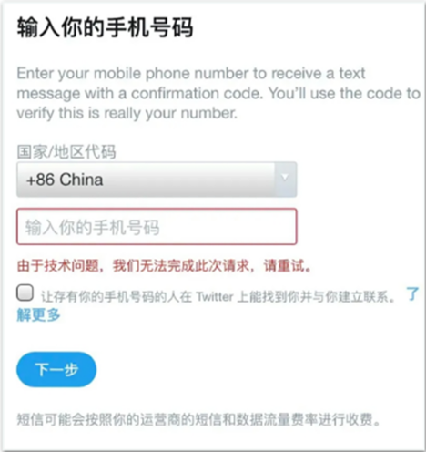
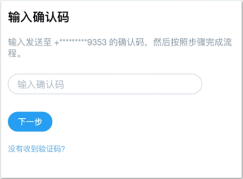

返回
欢迎查看常见问题
智慧服务，让您使用更简单

如何更好的使用 Twitter
通过赛盾 VPN 访问 Twitter遇到的问题，您可以按照文章内容解决问题
Twitter加速才能进行访问。通过 VPN 访问 Twitter 在客戶端中可能遇到以下几种情况，您可以跟着对应的解决方案解决您的问题。
一、无法注册X(Twitter)
说明:在 Twitter 客户端中使用邮箱或是手机号注册会因为 Twitter 软件 Bug 或是外在因素影响导致无法顺利
解决办法:您可以在 Twitter(官网:https://twitter com/)注册 Twitter 帐户即可解决在客户端遇到的问题

二、登入帐号时收不到验证码
解决办法:
方法一:您可以在电脑设备连接快连后在浏览器中访问推特官网登录您的账号，再重新登入手机即可。
方法二:若以上方法无效，麻烦请您将系统语言更改为英文，再重新尝试一下就能够正常使用了。

P.S X(Twitter)客戶端自带问题，并非赛盾 VPN跳出的错误提示或是限制，若无法得到解决建议您可以联系下 Twitter 客服，能更好的改善您遇到的问题。如果您想更流畅的使用国际资源，赛盾 VPN(官网https://xvhsidxt.onelink.me/cRUw/Ogesgjiu)绝对是您的最佳首选，您可以点击超链接下载对应的版本使用。
注:若您在下载和使用过程中有任何问题，您随时可以发送邮件给 {{kfEmail}}，将由专业的客户服务人员帮助您获取到最新版本的软件。